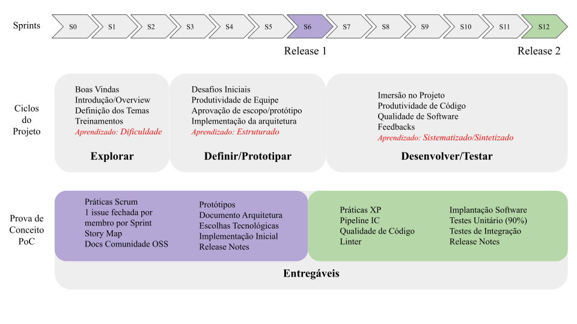

Metodologia Proposta
Ideia Principal
O principal foco da Metodologia Proposta é guiar os membros em um processo de auto aprendizado além da mentoria/liderança serem crucial para o compartilhamento de práticas e cultura organizacionais
A principal ideia por trás da metodologia proposta é utilizar o ciclo de onboarding e os princípios e práticas de aprendizagem baseada em experiência, a fim de aplicá-los em um ciclo de desenvolvimento de software que atenda aos padrões adotados pelas comunidades de software livre. Essa abordagem não apenas aumenta a eficiência e qualidade do projeto, mas também incentiva o desenvolvimento de habilidades e conhecimentos dos membros da equipe, promovendo um ambiente de trabalho colaborativo e produtivo.
Aprendizagem orientada a experiência e aprendizagem orientada a projetos são abordagens cada vez mais utilizadas na área de engenharia de software e métodos ágeis. Essas abordagens colocam o estudante/participante no centro do processo de aprendizagem, permitindo que ele vivencie situações reais e desafiadoras de desenvolvimento de software. Quando combinadas com o desenvolvimento de um projeto open source e padrões de comunidades open source, essas abordagens oferecem ainda mais benefícios para a formação dos estudantes.
A aprendizagem orientada a projetos desafia os estudantes a resolver problemas reais, por meio da criação de projetos significativos e desafiadores. Ao criar projetos, os estudantes são capazes de aplicar as habilidades e conhecimentos adquiridos em situações práticas, trabalhar em equipe, desenvolver habilidades de gerenciamento de projetos e aprimorar a capacidade de comunicação, que são habilidades essenciais na área de engenharia de software.
Ao combinar a aprendizagem orientada a experiência e a aprendizagem orientada a projetos com o desenvolvimento de um projeto open source, as equipes podem trabalhar em um projeto real, com uma comunidade de desenvolvedores que oferece suporte e feedback constante. Eles podem contribuir com código, documentação, testes e outras atividades relacionadas ao desenvolvimento de software, o que proporciona um ambiente de aprendizado ainda mais realista e desafiador.
Onboarding
Do processo de onboarding, adotamos as práticas que aceleram os membros na adoção da práticas, cultura, ferramentas necessárias para o desenvolvimento de um projeto real.
-
Boas Vindas/Introdução - no primeiros(s) encontros, os times são formados, os temas de projetos alocados, os mentores/monitores apresentados, as ferramentas são compartilhadas para a comunicação assíncrona, síncrona, e cada membro é cadastrado no repositório do projeto para que possam iniciar os projetos, com canal de dúvidas/ajuda, e o time formado para se organizarem. O ideal é ter um mentor/monitor por equipe.
-
Treinamento - principalmente no início do projeto, são necessários workshops e treinamentos práticos organizados pelos monitores. Esses workshops são bastante frequente no inicio do projeto e ao longo do desenvolvimento esses treinamentos são realizados sob demanda das equipes.
-
Feedback - O instrutor e os mentores devem sistematizar momentos de dar feedbacks para as equipes, seja em apresentações show me the code durante as sessões teóricas, ou de forma assíncrona nos repositórios. Os feedbacks são cruciais para reforçar cultura, práticas e garantir a qualidade dos artefatos entregues.
Aprendizagem por experiência
O aprendizagem por experiência guia a estruturação das sessões teóricas e também como as restrições dos projetos são apresentados durante o ciclo de projeto.
Configuramos as sessões teóricas e mentoria dos participantes de acordo com as etapas de aprendizado:
-
Etapa dificuldade - nas primeiras sprints do projeto, pouca informação e restrições de projeto são apresentados. Apenas a visão geral do problema ser resolvido, e dos entregáveis esperados ao final da primeira release. Essa etapa é de maior frustração dos participantes, que não sabem ainda se organizar, não sabem como desenvolver os artefatos. Nessa etapa, apresentamos a técnica do coelho, e sugerimos que uma sprint de entrega de artefato seja precedido de uma sprint de estudo.
-
Etapa Estruturar - as aulas téoricas apresentam os conceitos teóricos necessários no projeto, e sessões práticas e de feedback direcionam a refatoração desses artefatos. É importante que nesse ponto uma versão “errada” de cada artefato já tenha sido disponibilizado pelos times. Isso faz com que os participantes consigam estruturar o que estão colocando em prática.
-
Etapa de Sistematizar/Sintetizar - as aulas teóricas apresentam aspectos mais avançados e mostra a complexidade da interferência de habilidades não técnicas e técnicas na entrega dos artefatos do projeto. Um exemplo de sessão teórica é caso de estudo de projeto reais, mostrando como foi a execução de cada etapa do projeto, problemas encontrados, e solução técnica desenvolvida.
Comunidades de Software Livre
Comunidades de Software Livre possui um conjunto de padrões e boas práticas que são necessários para a colaboração assincrona distribuida. Normalmente, comunidades de Software Livre aderem as mesmas práticas da Industria de Software. Demandar que os participantes executem os padrões de comunidade de software livre garante que as práticas, padrões técnicos, documentação sejam alinhados com as demandas no mercado. Isso faz que a experiência das equipes no desenvolvimento do projeto possa ser usado no portfolio dos membros.
Alguns padrões de Comunidades de Software Livre adotados são:
-
Documentação: usar os templates e estrutura dos documentos propostos pela comunidade. Exemplos de documentos: Readme, código de conduta, guia de contribuição, arquivo de ambiente, licença, entre outros. Um guia completo desses padrões são disponibilizados em https://opensource.guide/pt/
-
Issues: a forma de documentar requisitos, questões/dúvidas, tarefas, bugs é única em comunidades de Software Livre e são as issues. Toda decisão do time, assim como todas as tarefas realizadas no ciclo do projeto são registradas nas issues. Isso dá transparência, rastreabilidade dos requisitos, além de ser uma forma eficiente de comunicação.
-
Pull Request: a forma de integrar novas contribuições em um projeto de software livre é por meio de revisão de pull request. Nesse processo de contribuição, todo novo artefato, alteração deve ser avaliada e aprovada por, pelo menos, uma pessoa que não fez as alterações. Essa prática permite a revisão contínua, diminui a probablidade de inserção de codigo malicioso no projeto, além de diminuir a quantidade de bugs por causa da inspeção.
Metodologia proposta
A imagem abaixo apresenta todos os elementos da metodologia utilizada para o desenvolvimento de um ciclo de formação a partir do projeto de software. A metodologia combina fundamentos de processo de onboarding, aprendizagem por experiência e práticas de comunidades de software livre para proporcionar uma experiência de aprendizagem completa e efetiva. A imagem ilustra a cronologia do ciclo de formação e destaca os principais pontos de cada fase.

A cronologia do projeto do software é mostrado abaixo: